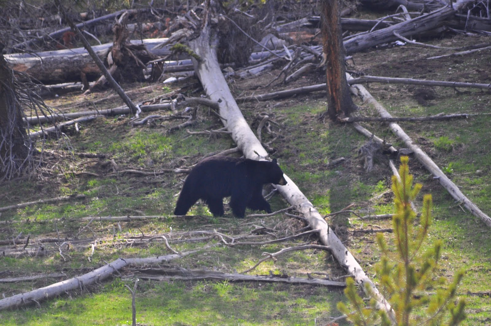
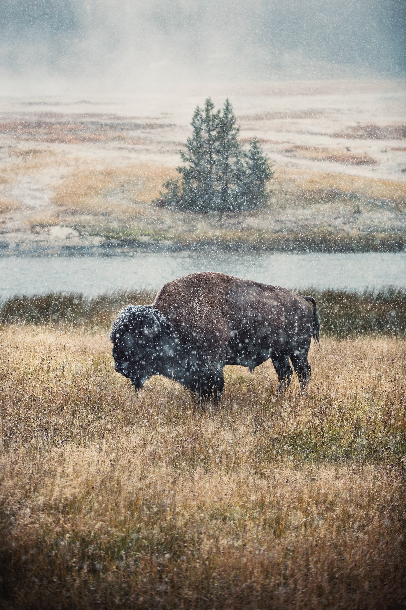
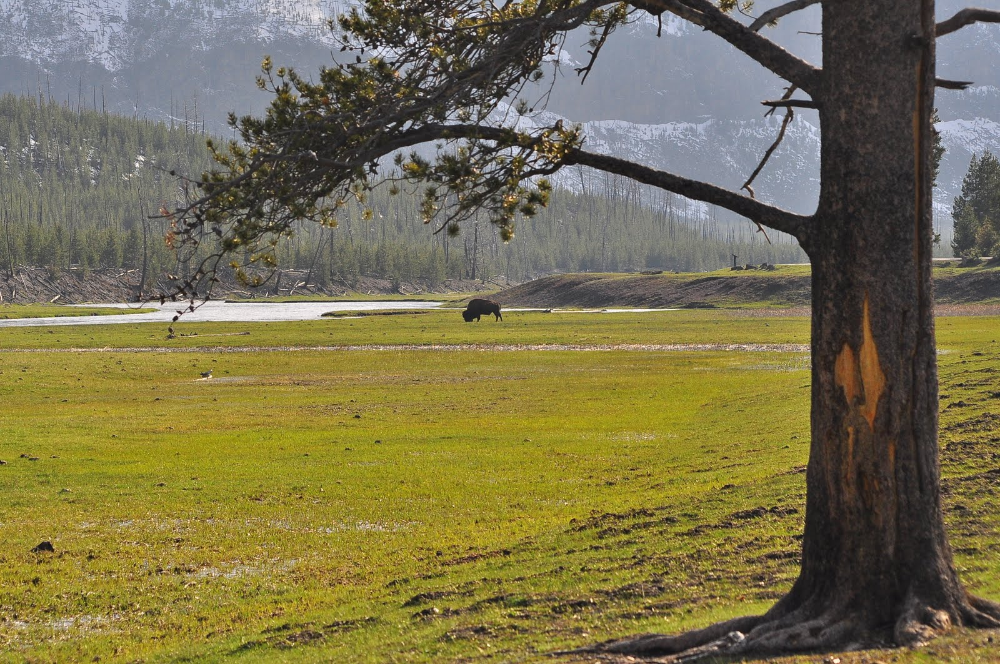

About Yellowstone
Yellowstone National Park is an American national park located in the western United States, largely in the northwest corner of Wyoming and extending into Montana and Idaho. It was established by the U.S. Congress and signed into law by President Ulysses S. Grant on March 1, 1872.[6][7][8] Yellowstone was the first national park in the U.S. and is also widely held to be the first national park in the world.[9] The park is known for its wildlife and its many geothermal features, especially Old Faithful geyser, one of its most popular.[10] While it represents many types of biomes, the subalpine forest is the most abundant. It is part of the South Central Rockies forests ecoregion..


